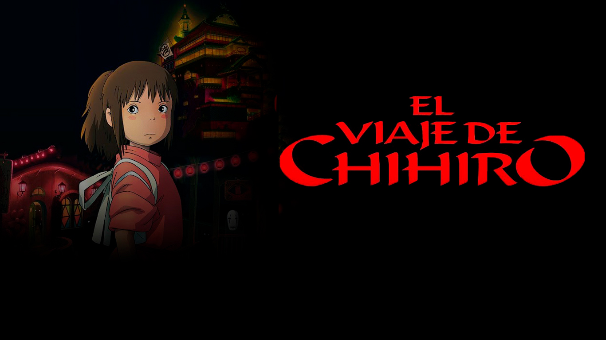
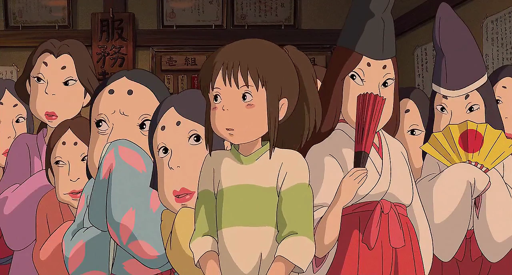
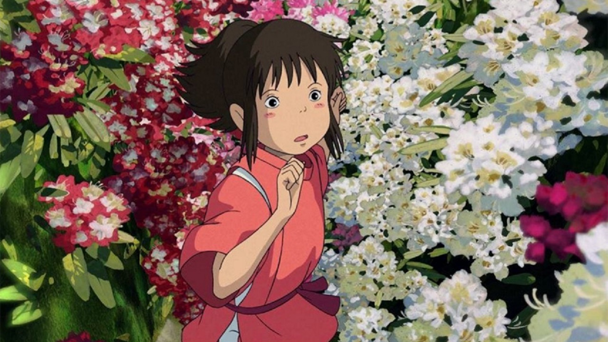
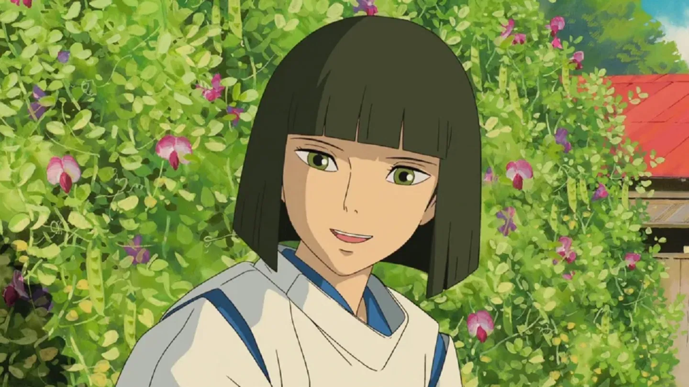
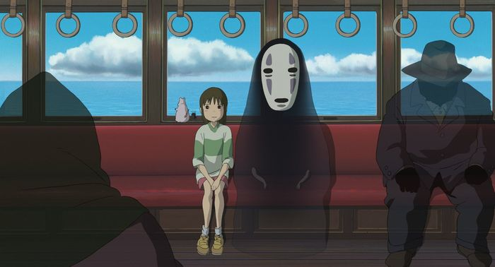
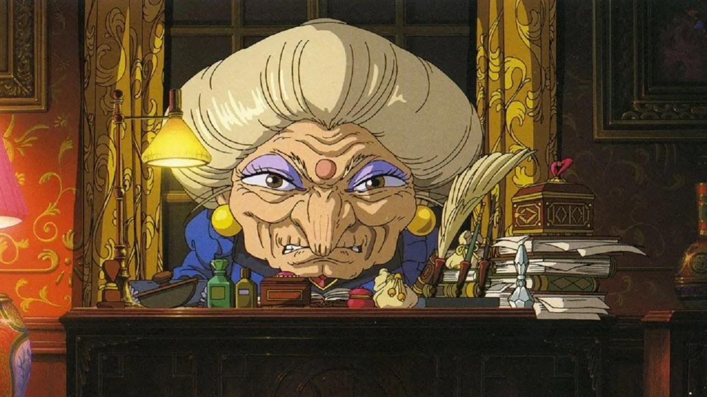

“El viaje de Chihiro” es una de las películas más icónicas de Studio Ghibli. Dirigida por Hayao Miyazaki, cuenta la historia de una niña que se adentra en un mundo espiritual lleno de magia, desafíos y autodescubrimiento.
Chihiro, una niña inicialmente temerosa y dependiente, se ve obligada a madurar al enfrentarse a dioses, espíritus y criaturas misteriosas. Su valentía crece con cada obstáculo que supera, simbolizando el paso de la infancia a la madurez.
El mundo espiritual representa una metáfora del cambio y la pérdida de identidad. En el baño de los dioses, cada personaje refleja una parte del alma humana: la codicia, la bondad y la pureza.
Haku, el espíritu del río, se convierte en guía y símbolo de la conexión con la naturaleza y los recuerdos olvidados. Su vínculo con Chihiro recuerda la importancia de la memoria y el amor desinteresado.
Visualmente, la película está llena de colores suaves, luces cálidas y paisajes oníricos que capturan la esencia de lo que significa soñar despierto. Es una obra que trasciende edades y culturas.
“El viaje de Chihiro” no es solo una historia de fantasía, sino una reflexión sobre el crecimiento personal, la identidad y la esperanza. Studio Ghibli logra, una vez más, que la magia sea un espejo del alma.
La Chihiro Fest es un evento anual dedicado al mágico universo de Studio Ghibli, donde fanáticos de todas las edades se reúnen para rendir homenaje a las películas que marcaron su infancia. Entre sus actividades más esperadas, el concurso de cosplay destaca por la creatividad y el detalle con que los participantes recrean a los personajes de El viaje de Chihiro.
Desde los vestuarios etéreos de Haku hasta las expresivas máscaras del Sin Cara, los asistentes transforman el evento en un verdadero desfile de fantasía. El ambiente se llena de música, luces suaves y aromas orientales, recordando el espíritu del baño de los dioses. Cada cosplay no solo celebra una película, sino también la conexión emocional que Studio Ghibli inspira en quienes creen en la magia cotidiana.

Representación de la joven protagonista, con tonos suaves y el clásico uniforme pastel del baño espiritual.

Representación del espíritu dragón, con rasgos delicados y una energía serena en tonos celestes y blancos.

Representación minimalista del espíritu enmascarado, con contrastes suaves entre el negro y el violeta.

Representación de la poderosa bruja del baño, con detalles dorados y una atmósfera mágica en tonos cálidos.